게임 화면 적용 예상도 · 12개 장면
기존 숲 전투 화면과 작은 악마 시트를 참조한 이미지 합성 초안입니다. 실제 엔진 실행 캡처가 아니며, 배경·HUD의 픽셀 단위 동일성을 보장하지 않습니다. 적용 예상도 설명
변신 · 기본공격 3콤보
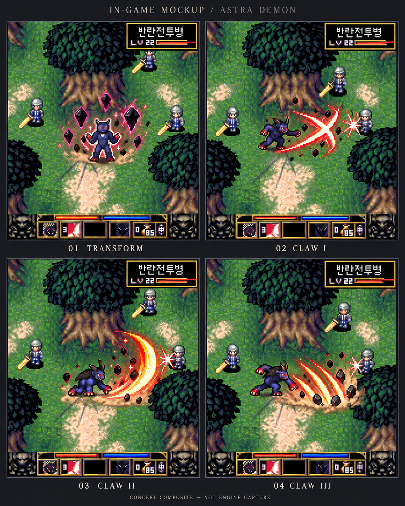
돌진 · 추종 · 지옥칼날
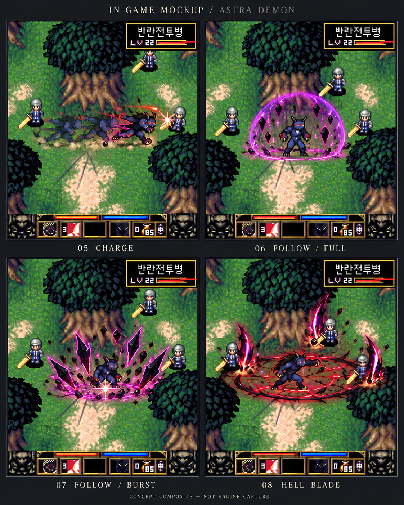
어둠심판 · 멸화 · 용암불
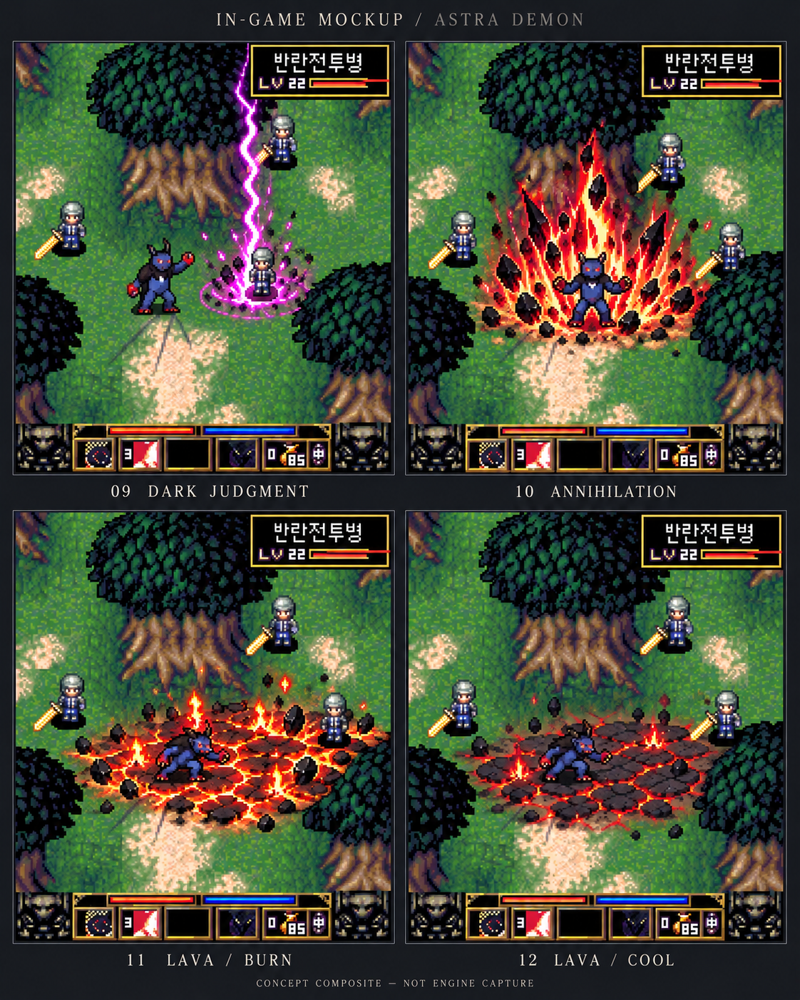
레퍼런스 51장을 검토하고 정리한 외형·변신·기본공격·스킬 콘셉트 보드 4장.
확대 콘셉트입니다. 실제 게임용 도트·투명 프레임은 별도 제작이 필요합니다. 이미지의 연출 크기는 공격 판정을 뜻하지 않습니다.
기존 숲 전투 화면과 작은 악마 시트를 참조한 이미지 합성 초안입니다. 실제 엔진 실행 캡처가 아니며, 배경·HUD의 픽셀 단위 동일성을 보장하지 않습니다. 적용 예상도 설명



start1~6의 흐름을 유지한 6단계 변신과 악마 외형.
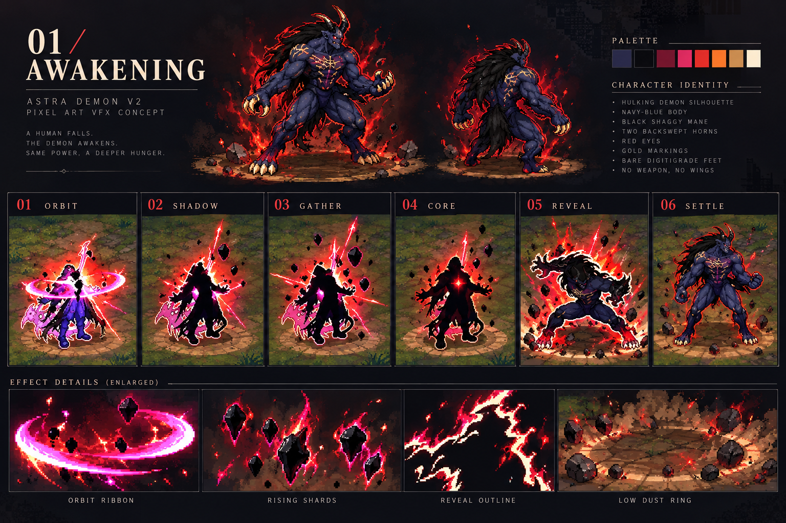
붉은 교차 베기, 금빛 올려치기, 세 줄 내려찍기와 돌진.
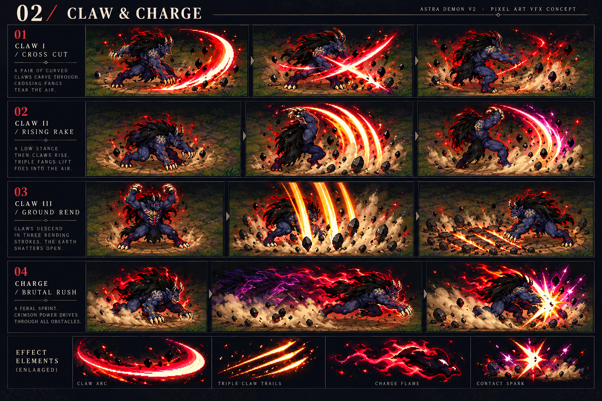
상단 DARK SURGE = 추종. 두 번째 BUILD 패널은 100% 상태입니다.
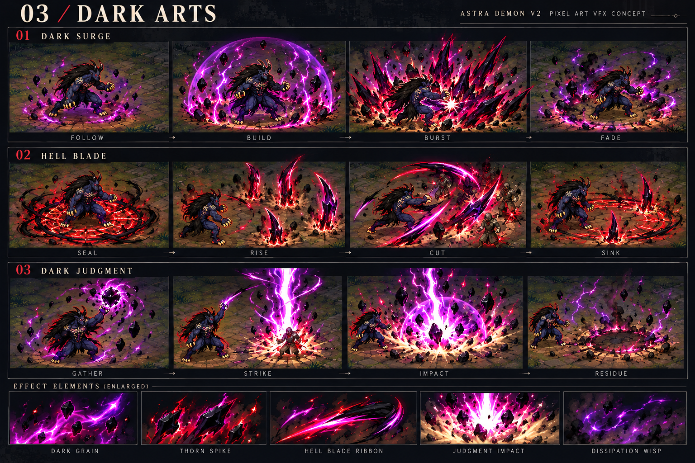
순간적인 분출과 지속되는 용암 지대를 구분했습니다.
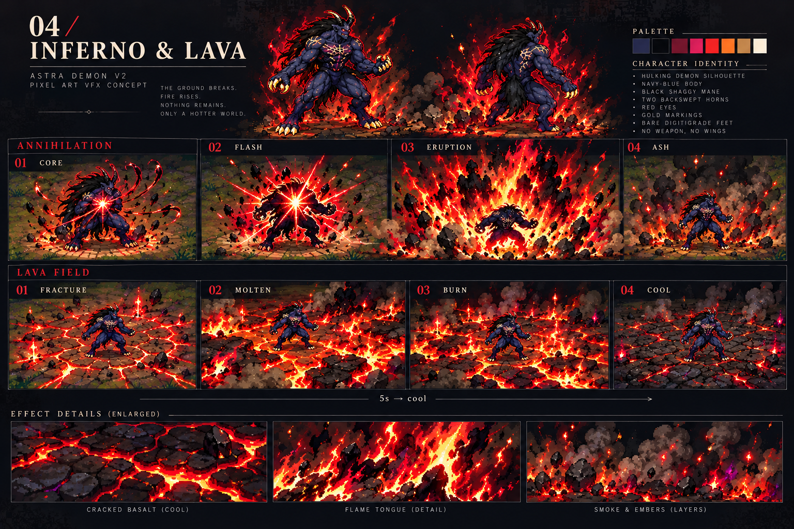
start1~6과 용암불1~2는 사용자 지정입니다. 전체 대응표 CSV
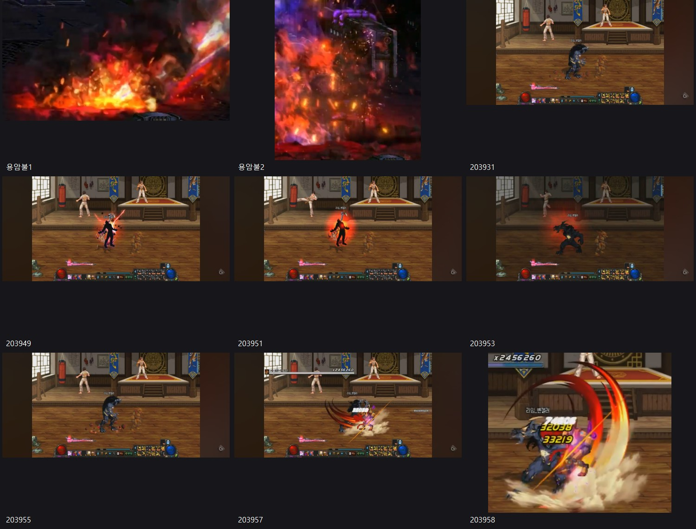
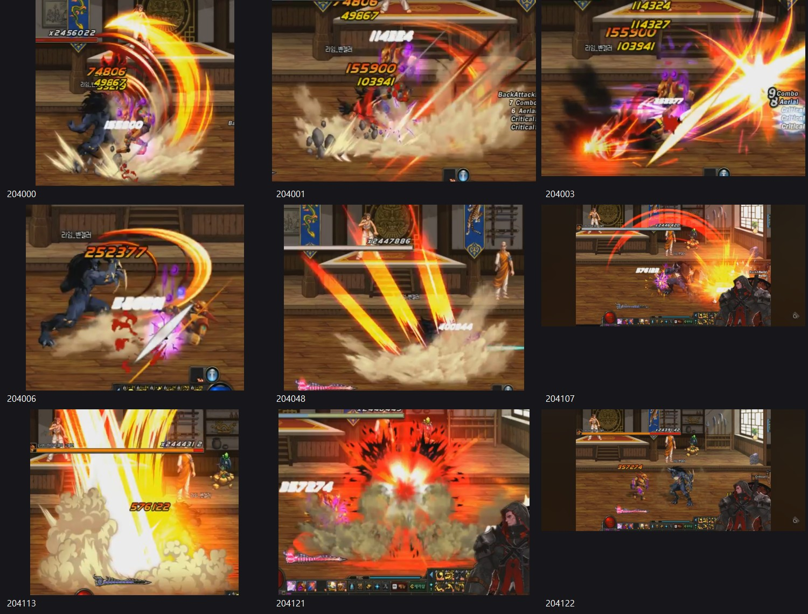
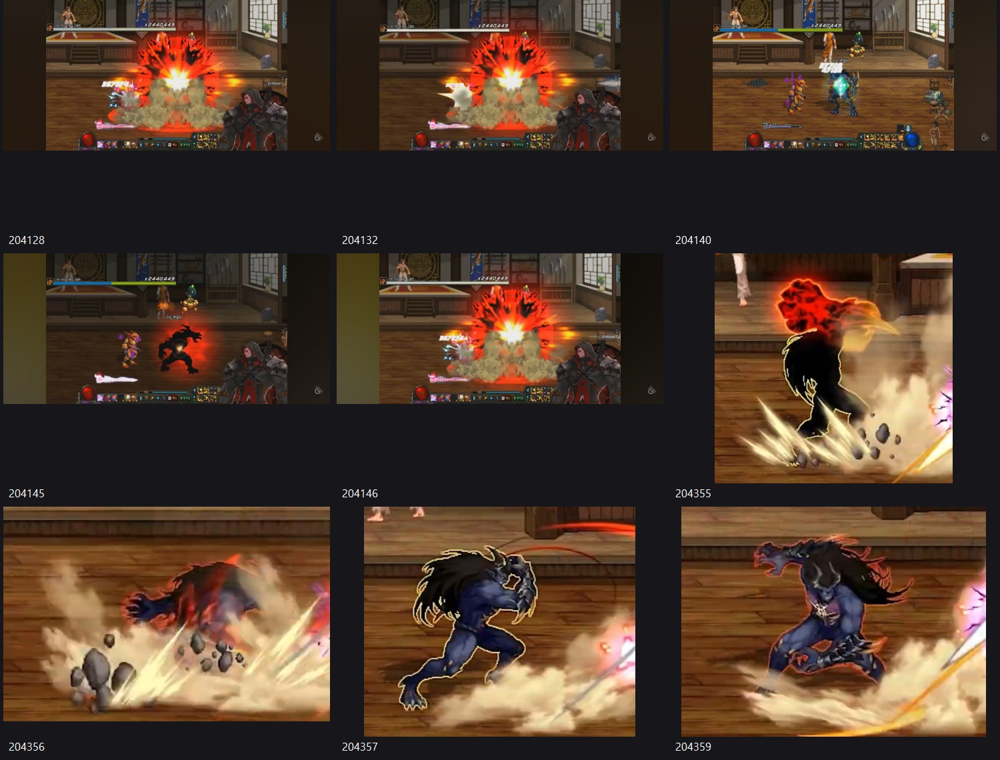
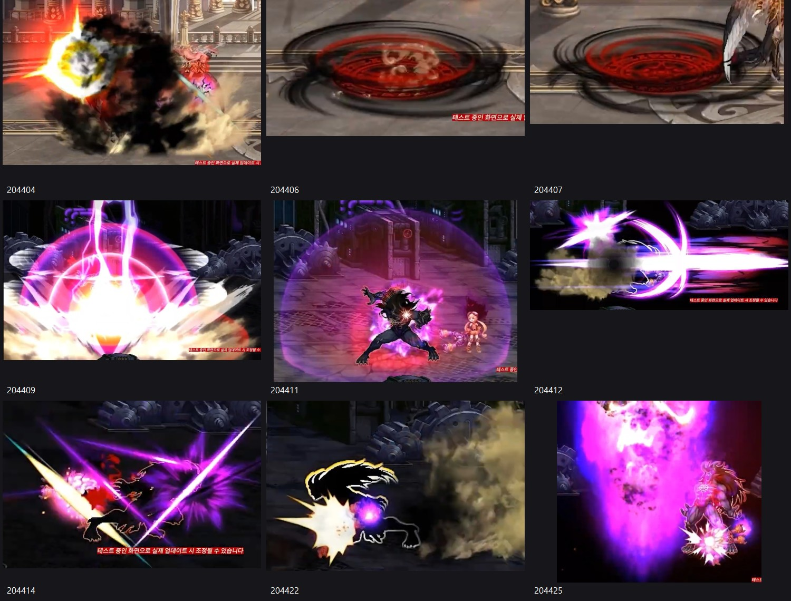
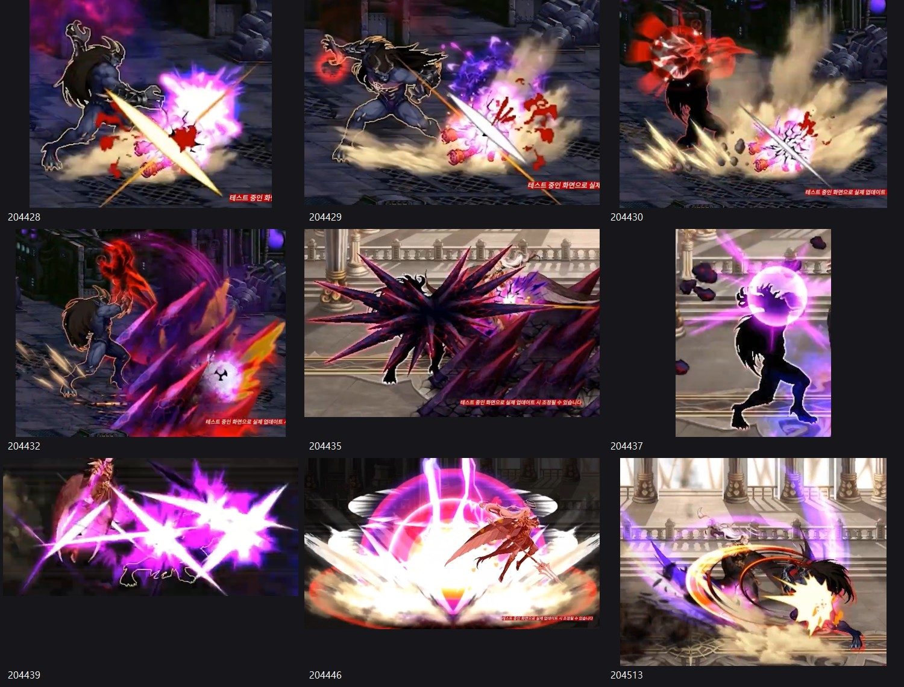
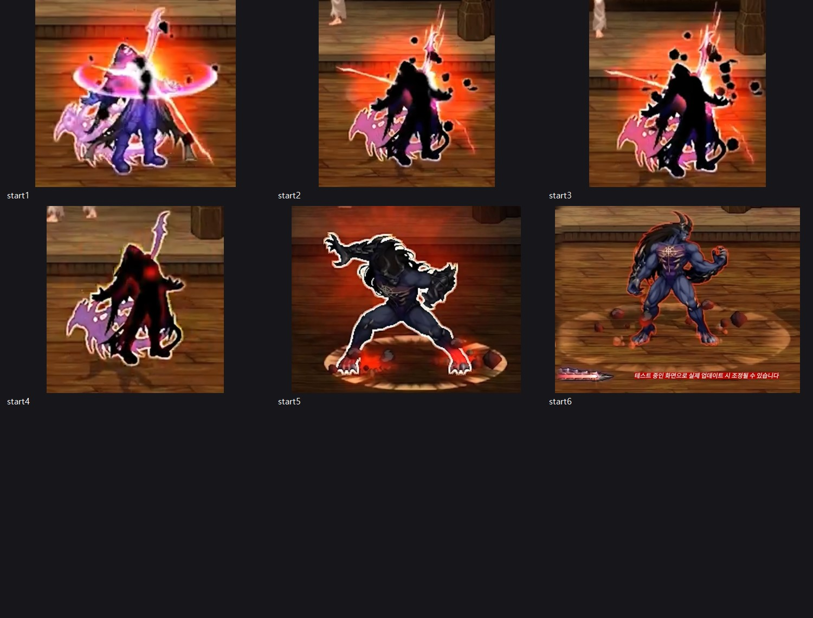